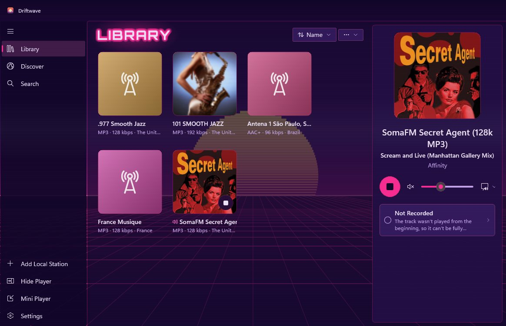
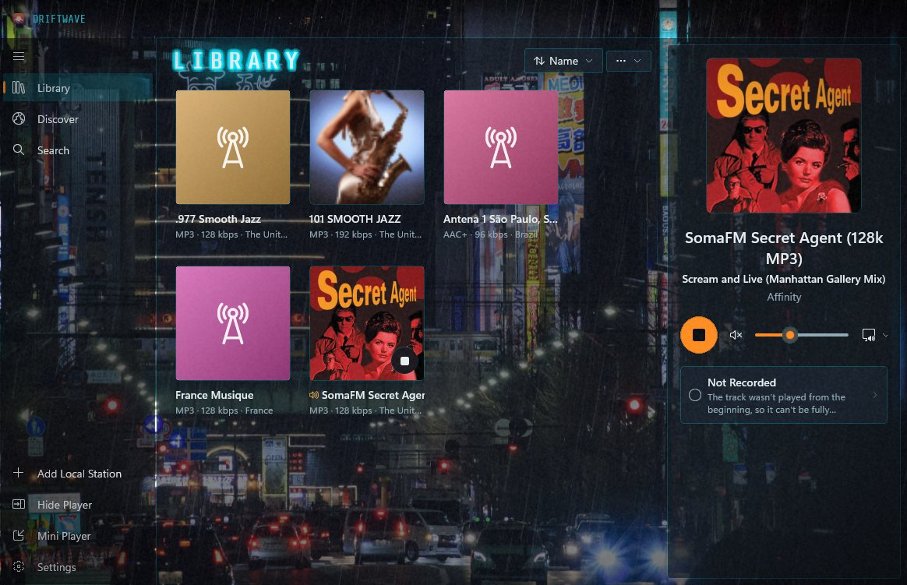
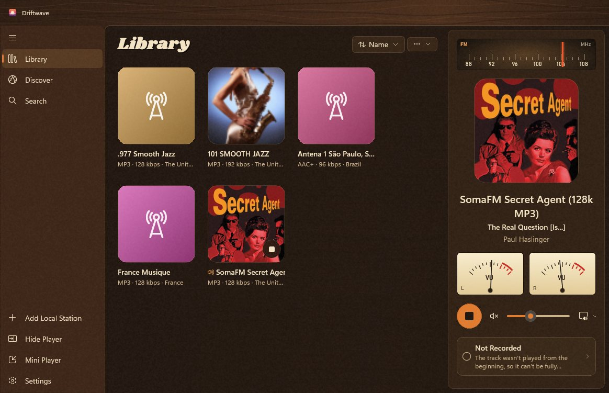
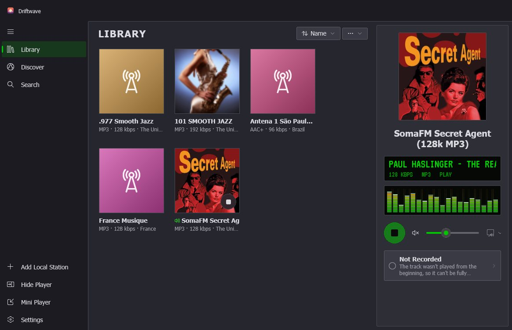
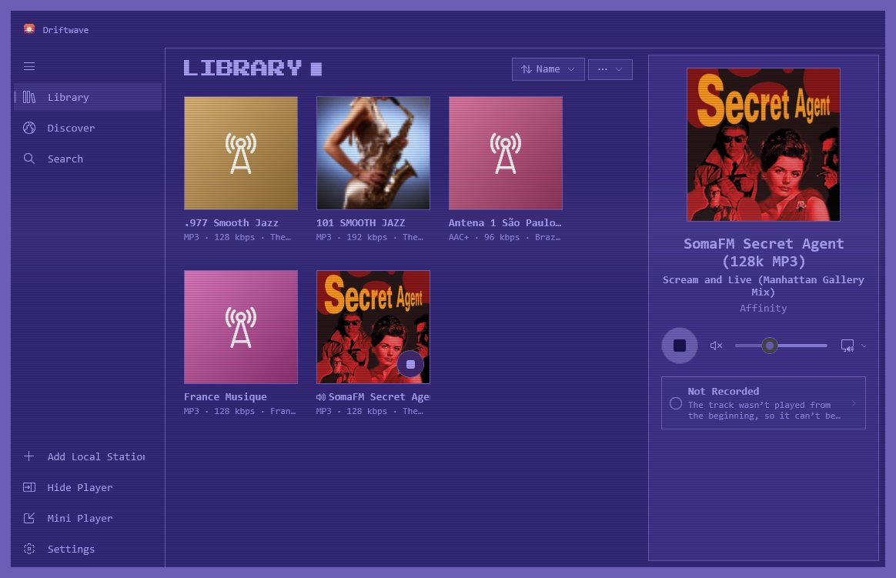
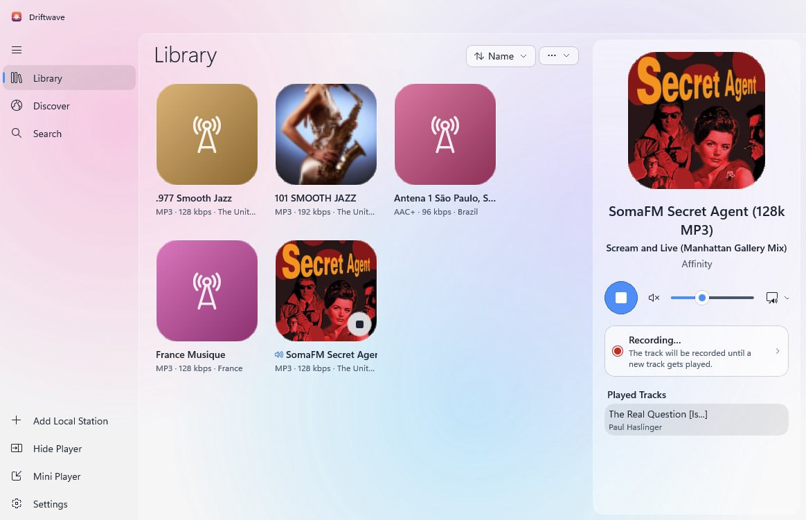
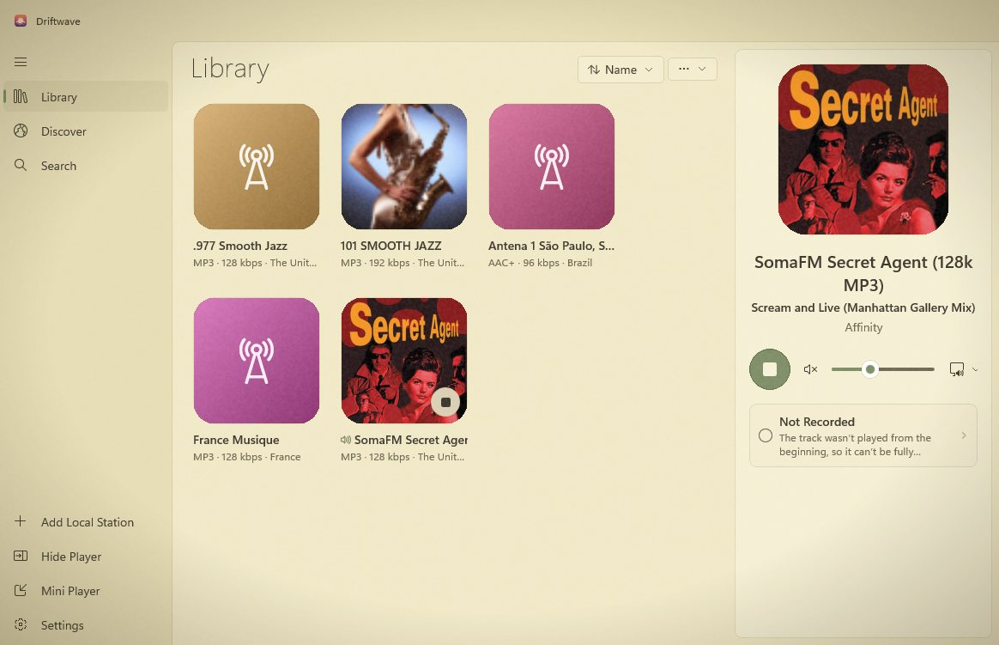
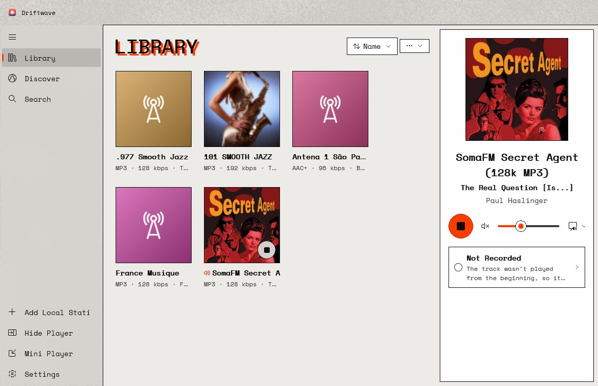
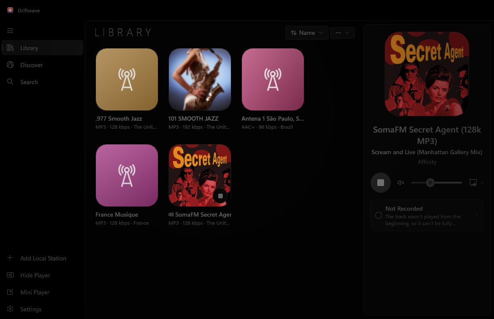

What it does
Discover
Search tens of thousands of stations from radio-browser.info, or add your own stream.
Now playing
Song titles in the app, in Windows' media overlay and on your media keys.
Recording
Each song is saved as a separate file, cut where the title changes.
Themes
26 built-in looks (including homages to classic computers, phones and consoles) and your own, plus your own GIF or picture background. Calm effects, no flashing, ever.
Mini player
A small always-there player and a notification-area icon.
Updates
One click in Settings. Your station keeps playing across the restart.
Themes









Install
Windows 10 or 11 (x64), with the .NET 10 Desktop Runtime: winget install Microsoft.DotNet.DesktopRuntime.10
- Download the latest zip from Releases.
- Unzip it, right-click Install.ps1 and choose Run with PowerShell. No admin rights are needed.
- Start Driftwave from the Start menu. Later updates come through Settings > Updates.
The user guide covers the library, recording, themes, shortcuts and troubleshooting.
Credits
Driftwave is inspired by Shortwave, the GNOME internet radio app by Felix Häcker and contributors. Shortwave is a lovely, carefully made app, and it's what gave Driftwave its shape. Driftwave is a separate app written from scratch. It contains none of Shortwave's code, artwork or other assets, and it isn't affiliated with the Shortwave or GNOME projects.
Station data comes from radio-browser.info. The theme fonts are under the SIL Open Font License (notices).